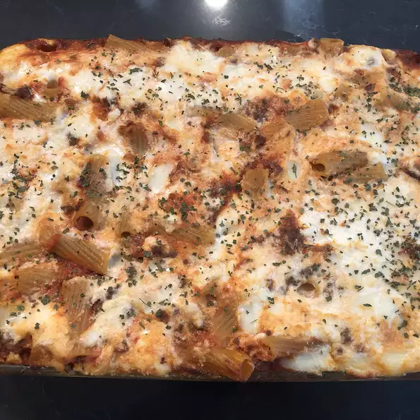

Go Back

The Best Baked Ziti
I am half Italian, was raised eating the finest Italian-American cuisine, and have filmed almost 2000 recipe videos,
so when you consider all of those facts, it seems incredible that I have never posted a video for baked ziti. Hopefully
I make up for that long wait by posting what I think is the best version of it.
Ingredients
- cooking spray
- 8 medium cheery tomatoes
- 1 (11 ounce) can refigerated pizza crust
- 8 teaspoons shredded mozzarella cheese
- 1/2 cup pizza sauce
- 8 teaspoons finely chopped red onion
- ½ cup shredded mozzarella cheese
- 8 slices pepperoni, quartered
- Italian seasoning to taste
- red pepper flakes to taste
- garlic salt to taste
Directions
- Step 1
- Preheat the oven to 400 degrees F (200 degrees C). Spray 8 cups of a muffin tin with cooking spray.
- Step 2
- Finely chop cherry tomatoes and drain any liquid. Set aside.
- Step 3
- Unroll pizza crust on a floured work surface and roll out thinly into a large rectangle. Using a 4-inch round cookie or biscuit cutter, cut 8 circles in the dough. Place dough circles in the prepared muffin cups, pressing dough into the bottom and up the sides of each cup.
- Step 4
- Drop 1 teaspoon mozzarella into each cup. Top with 1 tablespoon of pizza sauce. Add chopped tomatoes and red onions. Add 1 tablespoon of mozzarella to each cup, and top with pepperoni. Sprinkle each cup with Italian seasoning, red pepper flakes, and garlic salt to taste.
- Step 5
- Bake in the preheated oven until cheese is bubbling and melted, 14 to 15 minutes. Remove from the oven and let cool in the tin for about 5 minutes. Remove from the tin and serve hot.